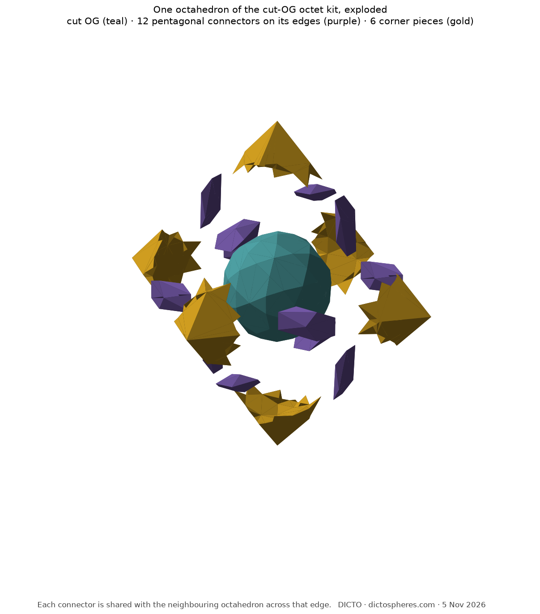
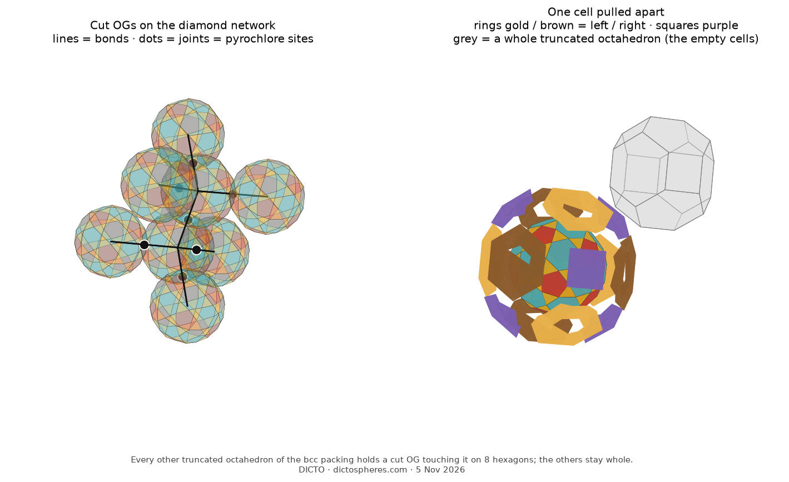

How one idea for the DICTO Ogdoecontahedron grew: what it settled, what it did not, what it opened, and the shapes found and re-found on the way
The DICTO Ogdoecontahedron is a ball of 20 hexagons and 60 kites, the kites gathered in twelve five-pointed stars. DICTO proposed putting a pentagon in the middle of each star. One flat cut at each of the twelve star points does it, and what is left turns out to be hiding a famous shape: its corners sit exactly at the midpoints of the edges of a football, the shape of the carbon molecule C60. From there the idea kept growing.
The OG's twenty regular hexagons surround twelve stars of five kites. DICTO proposed setting a pentagon in the middle of each star (§2). The cut that does it revealed the football (§2). DICTO then proposed making the triangles more regular; with all edges equal the triangles become equilateral and the hexagons give way (§2). He proposed instead making the hexagons truncated triangles; that works only when the solid gives up its mirrors and twists, left or right (§3). He proposed trying the cut solid where the OG already lives: the octet truss and its gyrated form, and the body-centred cubic double network with his Bull-horns adaptor (§4). Looking at the all-equal-edge solid, he proposed connecting it to a pyrochlore network (§4).
Check. The twelve removed corners are exactly the OG's twelve corners off the sphere; 98.35% of the volume remains. The triangles have base 2/9 (on a pentagon) and sides 0.2379 (on hexagons), with angles 55.7°, 62.2°, 62.2°. The ratio of the two edge lengths is 1.07047 = sin 60° / sin 54°, the ratio for the edge midpoints of a regular truncated icosahedron, and measured directly every corner lies on such a midpoint to within 10−10 (Figures 1 and 2). The truncated icosahedron is the shape of the C60 molecule (Kroto et al. 1985), so the 90 points sit at its bond centres.
All edges equal. The same arrangement can be built with all 180 edges equal and all faces flat, keeping full icosahedral symmetry: equilateral triangles, regular pentagons, and hexagons with all sides equal whose angles alternate 124.72° and 115.28° (numerical, residual 10−6). Its corners then lie on two spheres (radius ratio 1.0058). Regular hexagons and equilateral triangles never occur together here, which is why this arrangement is counted among the near-misses (Figure 2, right).

Proof. The Dehn invariant (Dehn 1901) adds the edge lengths, each paired with its dihedral angle modulo rational multiples of π. In exact coordinates (Q(√5)) the cut solid has two kinds of edge: 60 between a triangle and a pentagon, length² 4/81, dihedral angle 159.923°; and 120 between a triangle and a hexagon, length² 2/9 − 2√5/27, dihedral 156.200°. The ratio of the squared lengths, 9/2 − 3√5/2, is not a square in Q(√5), so the two lengths are rationally independent and the invariant vanishes only if both dihedral angles are rational multiples of π. The squared cosines of the angles between face normals are 89/109 + 16√5/545 and 51/109 + 18√5/109, of degree 2, so each cosine has degree at most 4; an angle kπ/n has a cosine of degree φ(n)/2, which forces φ(n) ≤ 8 and n ≤ 30. Neither angle equals any such kπ/n. ∎
Space filling and packing. A lattice-packing search (299 local searches; verified over lattice coefficients up to 4) gives a best density of 0.776244, against 0.789260 for the OG; each copy touches 12 neighbours, 10 on hexagons and 2 on triangles.
DICTO proposed making the hexagons truncated triangles, every angle 120° and the sides alternating long and short. With the mirrors kept this is impossible, since a mirror through each hexagon forces its six sides equal. Keeping only the 60 rotations, the solid on one sphere twists through a one-parameter family in which all twenty hexagons are flat truncated triangles, the pentagons stay regular, and the solid stays convex at least until the sides reach 0.114 and 0.343 (numerical, faces flat to 10−9). Each member comes as a left and a right (Figure 3). The triangles become scalene, so truncated-triangle hexagons and equilateral triangles never occur together.

The octet truss. The OG sits in every octahedron of the octet truss with its eight joint hexagons on the faces (DICTO DOI: 10.5281/zenodo.23457016); the cut solid does too, since the hexagons are unchanged. Across every octahedron edge two copies now face each other with parallel pentagons, turned 36° relative to each other, 0.206 apart and offset sideways by 0.350; their convex hull, a slanted pentagonal antiprism, is the connector. DICTO proposed adapting the octet kit; with the connector it closes with four shapes and one mirror pair (float, solid booleans with the Manifold library; Figures 4 and 5): the cut solid (volume 1.132872, one per octahedron); the connector (0.018887, six per octahedron, two thirds inside the octahedra); the corner piece (0.07826, six per octahedron, all one shape, no left and right); and the dented tetrahedron (0.397254), left in one class of tetrahedra and right in the other. Their volumes add up to an octahedron and two tetrahedra (2.510264), and no two pieces overlap.


The gyrated octet. DICTO proposed the gyrated octet too, where layers meet as mirror twins (DICTO DOI: 10.5281/zenodo.23484012). Across a twin face two copies again face each other with pentagons, now mirror images; their hull, the twin connector (0.015495), is one shape and its own mirror image. With every layer boundary a twin (four layers, 76 octahedra, 216 tetrahedra; 168 octet and 171 twin connectors, no edge without one, no overlap) each octahedron next to the twin plane keeps six twin corner pieces (0.07707, a left and right pair) and each tetrahedron becomes a twin dented tetrahedron (0.4059, a left and right pair). Each of these pieces is shaped by the one layer boundary it touches, and a direct test confirms it: stacks mixing octet and twin boundaries (five layers, 95 octahedra, 270 tetrahedra; for example twin, octet, twin) give every edge its connector with no overlap, and an octahedron between a twin and an octet boundary keeps three twin corner pieces and three ordinary ones. Any stacking of octet and twin layers closes with seven shapes, ten counting mirror images.
DICTO's Bull-horns adaptor. In the body-centred cubic double network, DICTO's Bull-horns OG adaptor fills the gap with one piece per hole between six copies (DICTO DOI: 10.5281/zenodo.23451210). DICTO proposed the same for the cut solid. The same construction (the Voronoi cell of each hole among all holes, minus the six copies that bite it) gives a new adaptor of volume 0.118230, exactly one third of a copy's gap: one solid without holes, centrally symmetric with a mirror plane, sphericity 0.514 (0.502 before). The cut solid and its adaptor fill space with two shapes, 76.16% and 23.84%. Where the twelve tips bit small notches into the old adaptor, the new one meets the pentagons with flat faces (Figure 6). Run on the OG itself, the same program returns the published adaptor volume 0.111898.
The pyrochlore network. DICTO proposed connecting the all-equal-edge solid to a pyrochlore network. Its twenty hexagons include sets of four pointing to the corners of a regular tetrahedron, so copies sit on the nodes of a diamond network, joined hexagon to hexagon; the joints are the midpoints of the diamond bonds, which are the pyrochlore sites. The diamond nodes and the empty second diamond together form a body-centred cubic lattice, whose truncated octahedra split space. Each copy lies wholly inside its own truncated octahedron and touches it on eight hexagons: the four joints and four facing empty cells. Nothing enters the empty cells, so they are whole truncated octahedra, and a truncated octahedron fills space alone. The copy fills 75.43% of its cell; the rest, split by the cell's fourteen faces, is eight hexagonal rings (2.2898 each, a left and right pair by the symmetry of the arrangement) and six square pieces (1.7914, one shape, no left and right). Four shapes, five with mirror images, fill space (Figure 7; float, solid booleans with the Manifold library, edge 1). The all-equal-edge hexagon is not centrally symmetric, so two copies touching at a joint meet on a full plane but their corners miss by 0.0475 of an edge; a thin twisted hexagonal connector at each joint, centred on its pyrochlore site, makes every join face to face.


Not settled. A closed form for the all-equal-edge solid; whether that solid appears in the near-miss catalogues as it is; exact volumes for the kits.
Opened. (1) The corners of the cut solid sit at the bond centres of C60, and solid C60 stacks its molecules face-centred cubic (Heiney et al. 1991), the close packing of DICTO's other work; we note the link and do not pursue it. (2) The truncated-triangle family is chiral, and in the gyrated octet the layers meet as mirror twins: a left and a right meeting at a twin layer is the same pattern as DICTO's self-mirroring Narcissus, and both bear on whether one piece can fill every stacking. (3) The pentagonal connector is a new kind of joint for OG networks.
| Shape | Status |
|---|---|
| Cut OG on one sphere (20 hexagons, 12 pentagons, 60 triangles) | Rediscovered: the rectified truncated icosahedron; its relation to the OG is new in the sources checked |
| All-equal-edge version | Arrangement known among near-misses (Wikipedia, "Near-miss Johnson solid"; McCooey, Rectified Truncated Icosahedron); this all-equal-edge solid not found in those sources |
| Truncated-triangle family, left and right | Not found in the sources checked |
| Pentagonal connector (slanted pentagonal antiprism) | New as a piece; unnamed |
| Corner piece of the octet kit; dented tetrahedra, left and right | New pieces; unnamed |
| Bull-horns adaptor for the cut OG | New; derived from DICTO's Bull-horns OG adaptor |
| Twin connector; twin corner pieces and twin dented tetrahedra, left and right | New pieces (gyrated octet); unnamed |
| Hexagonal rings, left and right; square piece (pyrochlore cell) | New pieces; unnamed |